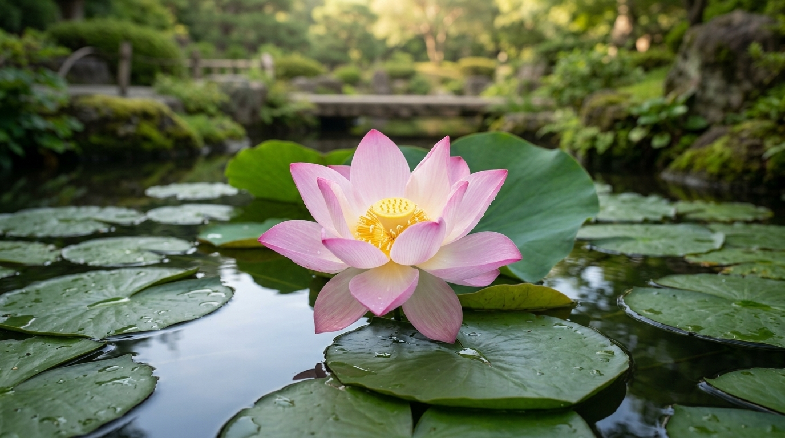

Lótus

A flor de lótus é uma planta aquática conhecida por sua beleza, suas pétalas delicadas e suas folhas que flutuam sobre a água. Encontrada em diferentes regiões da Ásia, ela possui grande importância cultural e simbólica, especialmente em países como Japão, China e Índia. Suas flores podem apresentar tons de rosa e branco, criando uma aparência elegante e tranquila. Além de sua beleza ornamental, o lótus chama a atenção por crescer em ambientes aquáticos e florescer acima da superfície da água. Na cultura japonesa, a planta está associada a ideias de pureza, serenidade e renovação. Por essas características, tornou-se uma presença marcante em jardins, pinturas e outras expressões artísticas. Nesta página, você conhecerá mais sobre a história dessa flor, o clima adequado para seu desenvolvimento, as formas de plantio e os cuidados necessários para cultivá-la.
História da Flor de Lótus
A flor de lótus possui uma história antiga e está presente nas tradições de diferentes povos asiáticos há milhares de anos. Sua aparência delicada e sua capacidade de crescer em águas lamacentas contribuíram para que recebesse significados simbólicos relacionados à pureza, à renovação e à superação de dificuldades. Em algumas tradições religiosas e filosóficas orientais, o lótus representa o desenvolvimento interior e a busca pela sabedoria. Suas pétalas que se abrem sobre a água são frequentemente interpretadas como um símbolo de transformação e crescimento. No Japão, a flor de lótus é conhecida como *hasu* e aparece em jardins, templos, pinturas e outras manifestações culturais. Ela também pode ser encontrada em representações artísticas tradicionais, nas quais sua forma é utilizada para transmitir tranquilidade e harmonia. Durante o verão, os lagos com flores de lótus atraem visitantes interessados em observar suas grandes flores e folhas circulares. Além de seu valor simbólico, o lótus possui importância ornamental e botânica. Suas flores podem ser rosadas ou brancas, e suas folhas arredondadas se destacam pela capacidade de repelir parte da água que entra em contato com sua superfície. Essa característica inspirou estudos científicos sobre materiais que apresentam propriedades semelhantes. Assim, a flor de lótus une beleza natural, história cultural e curiosidade científica, sendo uma das plantas aquáticas mais conhecidas do mundo.
Clima Ideal para o Lótus
O lótus é uma planta aquática que se desenvolve melhor em locais com bastante luz solar e temperaturas amenas a quentes durante o período de crescimento. A exposição ao sol é importante para estimular a formação das folhas e favorecer o aparecimento das flores. Por isso, o ideal é escolher um local que receba várias horas de luz solar direta por dia. Em ambientes muito sombreados, a planta pode produzir folhas, mas apresentar uma floração menos intensa. A temperatura da água também influencia o desenvolvimento do lótus. Em geral, a planta cresce com mais vigor durante os meses quentes, quando há maior disponibilidade de luz e calor. Em regiões com estações frias, seu crescimento pode diminuir durante o inverno, e algumas partes da planta podem entrar em um período de repouso. A resistência ao frio varia conforme a espécie ou variedade cultivada, por isso é importante conhecer as características da planta escolhida antes do plantio. Como vive em ambientes aquáticos, o lótus precisa de água suficiente para manter suas raízes e seu rizoma em condições adequadas. Diferentemente de plantas terrestres, ele não depende apenas da umidade do solo, mas de um recipiente ou espaço com água e substrato apropriado. Mesmo assim, a qualidade da água e a incidência de luz devem ser observadas. Com temperaturas favoráveis, bastante sol e espaço para crescer, o lótus pode se desenvolver de maneira saudável e produzir flores de grande beleza.
Como Plantar o Lótus
O plantio do lótus exige alguns cuidados específicos porque se trata de uma planta aquática. Uma das formas mais comuns de cultivá-lo é utilizar um recipiente largo, resistente e sem furos de drenagem, que permita manter a água no interior. O recipiente precisa ter espaço suficiente para o desenvolvimento das raízes e do rizoma, estrutura subterrânea responsável pelo crescimento da planta. Também é possível cultivá-lo em lagos apropriados, desde que existam condições adequadas de profundidade, luz e qualidade da água. Para preparar o recipiente, utiliza-se um substrato adequado para plantas aquáticas, geralmente composto por solo argiloso ou terra própria para esse tipo de cultivo. É importante evitar substratos muito leves, que possam flutuar e deixar a água excessivamente turva. O rizoma deve ser colocado cuidadosamente no substrato, sem danificar seus pontos de crescimento. Depois, adiciona-se água aos poucos, mantendo a planta firme e evitando movimentar excessivamente o solo. O lótus também pode ser cultivado a partir de sementes, embora esse método exija mais paciência e cuidados. A germinação depende da preparação adequada das sementes e de condições favoráveis de temperatura e umidade. Como as orientações podem variar conforme a variedade, é recomendável seguir as instruções de um fornecedor especializado. Depois do plantio, o recipiente deve ser colocado em um local ensolarado e protegido de situações que possam danificar a planta. Com espaço, luz e condições apropriadas, o lótus poderá desenvolver folhas e, posteriormente, flores.
Cuidados com a Flor de Lótus
Para manter o lótus saudável, é necessário observar regularmente a quantidade de luz solar, o nível da água e as condições gerais da planta. Como ela precisa de bastante luminosidade, o recipiente deve permanecer em um local ensolarado. A água precisa ser reposta quando o nível diminuir devido à evaporação, especialmente nos dias quentes. Também é importante verificar se o recipiente possui espaço suficiente para o crescimento das folhas e do rizoma. As folhas antigas ou danificadas podem ser retiradas com cuidado para manter a planta organizada e facilitar a observação de possíveis problemas. No entanto, não se deve remover folhas saudáveis sem necessidade, pois elas participam da produção de energia para o crescimento. Durante a floração, é possível observar que cada flor permanece aberta por um período limitado, seguindo seu ciclo natural. O aparecimento de flores murchas faz parte desse processo e não significa necessariamente que a planta esteja doente. A fertilização deve ser feita com produtos apropriados para plantas aquáticas e seguindo as orientações do fabricante, evitando o excesso, que pode prejudicar a planta e favorecer o crescimento exagerado de algas. Também é importante observar a presença de insetos, manchas nas folhas ou alterações incomuns no crescimento. Manter o recipiente limpo, evitar mudanças bruscas nas condições de cultivo e respeitar o ritmo natural da planta são atitudes que ajudam a conservar sua saúde. Com cuidados regulares, o lótus pode se tornar um destaque em jardins aquáticos, trazendo cor, delicadeza e uma atmosfera tranquila ao ambiente.